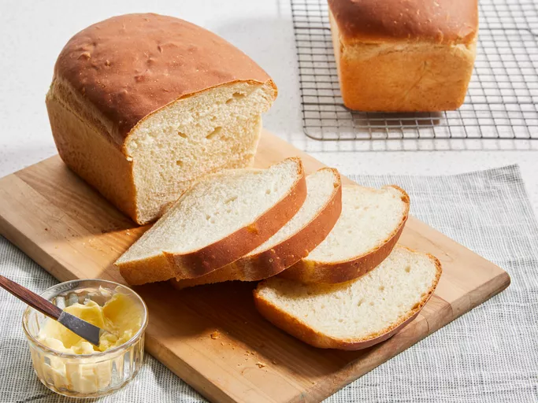

Bread

Enjoy this simple recipe for white bread
Ingredients
- 2 cups of warm water
- 2/3 of a cup of white sugar
- 3/2 of a tablespoon of dry yeast
- 1/4 of a cup of vegetable oil
- 3/2 of a teaspoon of salt
- 6 cups of bread flour
Steps
- Gather all ingredients
- Dissolve sugar in warm water in a large bowl, and then stir in yeast. Allow to proof until yeast resembles a creamy foam, 5 to 10 minutes.
- Mix oil and salt into the yeast. Mix in flour one cup at a time.
- Knead dough on a lightly floured surface until smooth.
- Place in a well-oiled bowl, and turn dough to coat. Cover with a damp cloth. Allow to rise until doubled in bulk, about 1 hour.
- Punch dough down.
- Knead for a few minutes, and divide in half. Shape into loaves, and place into two well-oiled 9x5-inch loaf pans.
- Allow to rise until dough has topped the pans by one inch, about 30 minutes.
- Meanwhile, preheat the oven to 350 degrees F (175 degrees C).
- Bake the risen loaves in the preheated oven until golden brown for 30 minutes.
- Enjoy!
source
Homepage